title: 冷清的早晨就用程式之美點綴吧 class: center, middle ## 冷清的早晨就用程式之美點綴吧 ## 楊翔雲 Morris Yang 2022 Jan. 花蓮高中 --- ## 背景 ## * Sep. 2015 ~ Sep. 2017 國立臺灣大學 資訊工程研究所 平行與分散實驗室 畢業 * Sep. 2012 ~ Sep. 2015 國立中央大學 資訊工程學系 畢業 * Sep. 2011 ~ Sep. 2012 國立中興大學 資訊科學與工程學系 肄業 * Sep. 2011 花蓮高中 畢業 / 數理資優班 數學組 + 資訊組 --- ## 工作經驗 ## * Oct. 2021 ~ Cadence Design System, Software Engineering Manager * Oct. 2020 ~ Sep. 2021 Cadence Design System, Principal Software Engineer * Jul. 2018 ~ Sep. 2020 Cadence Design System, Senior Software Engineer * Oct. 2017 ~ Jun. 2018 Cadence Design System, Software Engineer II --- ## 困惑的高中時期 ## 英文、物理、生物、化學班上吊車尾，找不到自己的出路 剩下 **數學** 和 **程式** (?) * 數學能力競賽 **No**, 跟學校考試不同，不是背多分 * 資訊能力競賽 **No**, 筆試要背多分 * 鏈結串列 (linked list)、指標 (pointer) 看了一年還不懂 --- ## 怎麼學數學 ## 於此，我們擁有比別人多一點的資源、多一點的天賦。 不是只有老師勾選的才完成，身為數學組的責任？ 每個課本章節後的**所有習題**，每周花一整天完成。 * 理解它、思考它、磨練它 * 做得更好、算得更快、想得更精簡 有參考解答，無須勉強全部都由自己想到。 --- ## 高中的自我修練 ## 磨出自己的利器，你的最大競爭對手絕不在這所學校裡 * ZeroJudge 高中生解題系統 每一個寒暑假都是**一百題**的挑戰，高效率自我反饋機制 * Blog 部落格 紀錄自己的學習筆記，反覆加深印象、淬鍊思考流程 * **費曼學習法** —「教別人是最好的學習」 正因為要教導，迫使自己對事物更加了解 --- ## 撰寫原則 ## 「用說的描述程式碼」不斷地問自己講話是否滿足 * 沒有歧異性 * 足夠簡單扼要 * 沒有冗詞使用 * 對任意第三者，沒有前後文的狀態下，能夠明白 當年話語中不能出現「**那個**、**這個**」的小遊戲 隱含的意義為—「學術寫作的精神」 --- ## 用詞清晰 ## > 老婆：「買十個包子回來，如果看到賣西瓜的就買一個。」 > 老公：「好。」 > 老婆：「為什麼只有一個包子？」 > 老公：「因為我看到賣西瓜的。」 隨著程式經驗的豐富，用詞的狀態要明確、省略語要減少。 * 變數使用的定義 (`dp[i][j] = max(dp[i-1][j-1])`) * 變數使用的狀態 (`int one = 2;`) * 函數設計的判斷 (`if-if-if` vs. `if-elif-else`) --- ## 短碼技術 ## ```c++ if ((y->ch[xp]=x->ch[1^xp]))y->ch[xp]->p=y; ``` 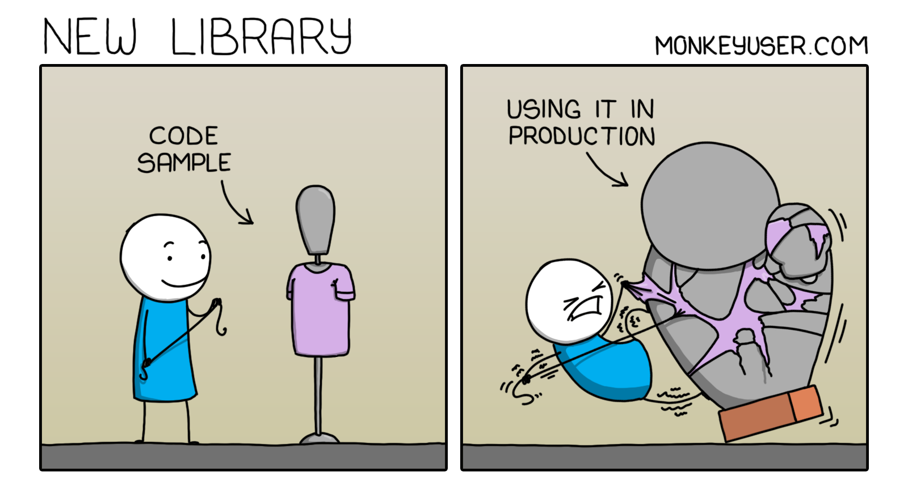</img> --- ## 短碼技術 cont. ## * 細思好處是什麼？壞處是什麼？ * 程式碼有比較有效率嗎？ * 為什麼我們需要它？ * 如果沒有優點，樸實一點也無妨 --- ## 多方參考 ## 善用 google/github/codeforces，找尋別人的作法 * 反覆差異比較、思考孰優孰劣 * 練習閱讀別人的程式碼 * 不只只是看，抓下來執行 * 換位思考，別人看得懂你的程式碼嗎？ * 融合他人技術，嘗試融會貫通 --- ## 設計問題 ## 今天學到了什麼？**聯想**到了什麼？不妨設計成一道程式問題 * 活用程式知識 * 從生活中，探究演算法邏輯 排隊、採購、平面布局 * 觀察再觀察 --- ## 設計問題 cont. ## 從大自然，探究演算法邏輯 通用算法，螞蟻、蜜蜂、鳥群算法 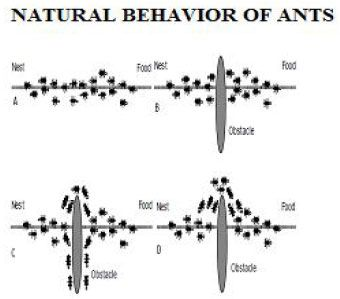</img> --- ## 參與競賽 ## 參與競賽不是為推甄大學使用，是**探索**自己的方法之一。 * 詢問並紀錄自己從中學了什麼、觀察到什麼 * 認識朋友，拓展不同人脈 * 也許，有比競賽更適合你的方式 * 追求限時的撰寫速度 - **打**比賽 * 追求極致的運行能力 - **不打**比賽 --- ## 大學四年 ## 一般人的大學生活多采多姿 * 社團活動 我沒有，志不在此。需要時間抓那些蟲、想那些小事 * 獨立生活 我宅宅，窮只能讀書。 * 知識領域多元發展 我單元，通識教育不適合我。 悉知**梧鼠技窮**、偏好「**匠人精神**」的不歸之路。 --- ## 大學寒暑假 ## 每一個寒暑假都是**三百題**的挑戰 * UVa Online Judge * Virtual Judge * BZOJ 一天五題、一天十題，挑戰自己的思考極限。 > 「人如果是台電腦、大腦就八個暫存器、 > 最多同時八件事情、思考深度最多八層」 但，不是每個人都能到八個暫存器全開。 --- ## 大學寒暑假 - 推薦書籍 ## 先有基礎，再來看以下的題單 * 《算法競賽入門經典 第二版》 作者：劉汝佳 編著 * 《算法競賽入門經典 訓練指南》 作者：劉汝佳 編著 --- ## 知自己不知 ## 達克效應 Dunning-Kruger Effect 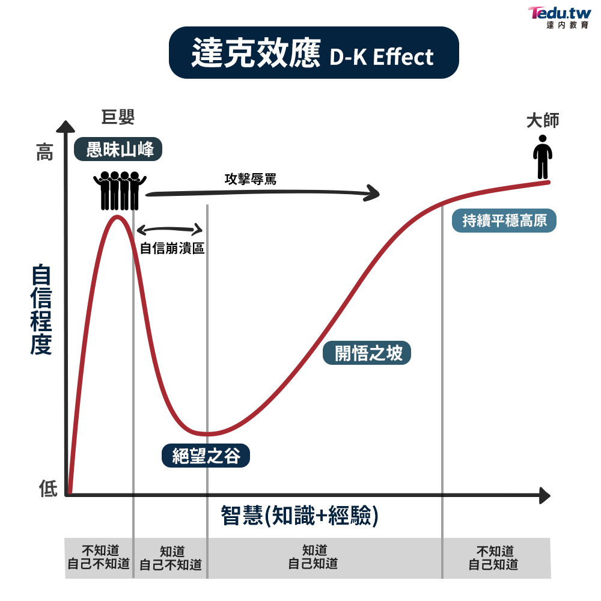</img> --- ## 熬夜寫程式 ## 並沒有、更喜歡在睡眠中思考。 </img> --- ## 熬夜寫程式 No ## 請留下更好的精神，給明天的自己 * 專心聽課 減少事後彌補的時間，既然都要花時間去聽課，就備妥精神。 * 健康是你最大的本錢 工程師的肝很重要、很貴。 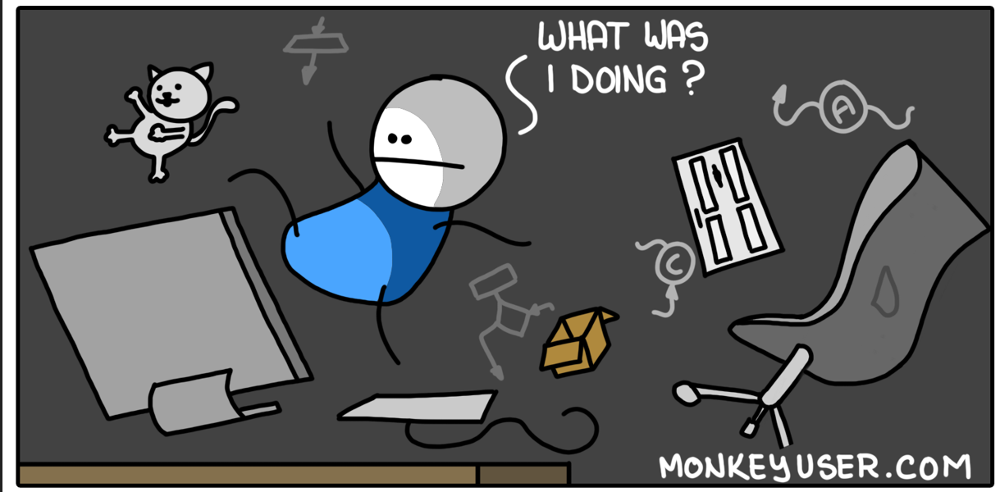</img> --- ## 樹要長得高、根要扎得深 ## Now, we're using skill forest, not skill tree. 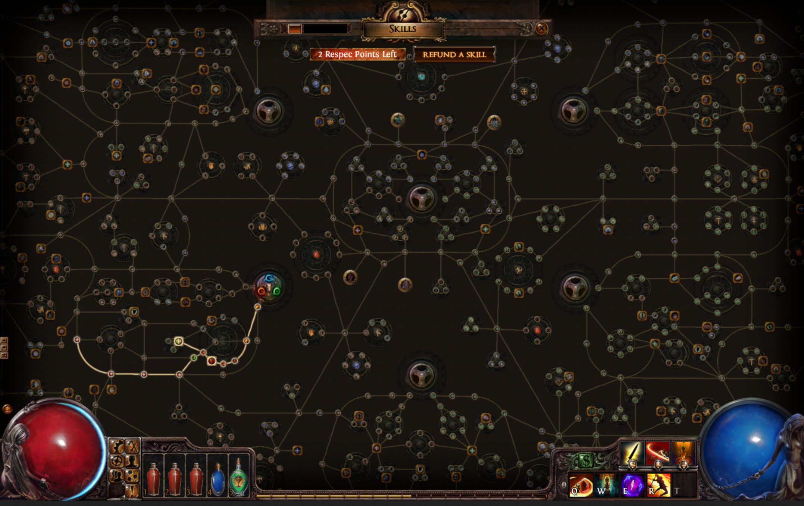</img> --- ## 樹要長得高、根要扎得深 cont. ## * 電腦基礎，關乎如何寫好程式 編譯器、作業系統、即時系統、計算機架構、計算機組織、虛擬機器、資料庫系統 * 程式要用的數學技巧 資料結構、演算法、高等演算法、計算幾何、密碼學 * 語言能力，知己知彼 正規語言、程式語言、組合語言、物件導向、平行程式 * 應用領域，定位人生目標 影像處理、數位影像生成、計算機圖學、電腦攻擊與防禦 --- ## 同儕影響 ## 「大家都跑去玩那個熱門領域，應不應該跟去？」 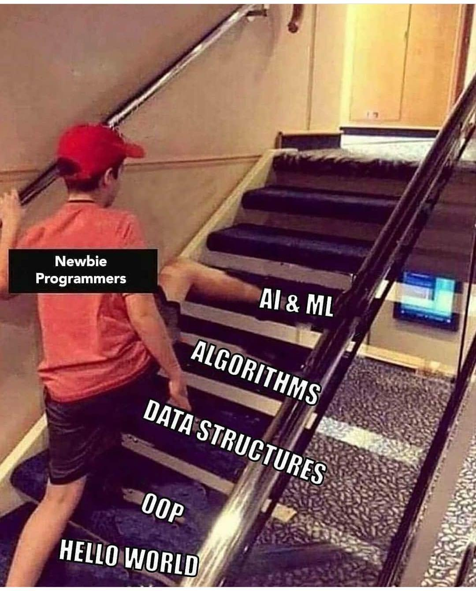</img> --- ## 同儕影響 cont. ## * 時間成本、沉沒成本 * 心有所屬、自己的天賦 * 道德價值觀 * 未來有沒有飯吃 big data, AI, neural network, cloud computing, machine learning, deep learning, block chain, etc. --- ## 別只做對的事 ## 大部分資訊只會教你如何成功、失敗有時更重要。完成你的失敗，使經驗更加地豐富。 * 找時間，實作自己的猜測想法。 (演算法、資料結構) * 假解是什麼？「偽物比真物更有價值」 (通用算法) * 思考「為什麼不那樣實作、那樣的結構有什麼缺點。」 ```c++ std::vector std::list std::set std::unordered_set ``` --- ## 精簡指令集 vs. 複雜指令集 屬於「氣宗」還是「劍宗」？ * 專科的訓練，「劍宗」訓練弟子的方式，一開始就教他怎麼用劍，這些人習武的方式直接了當，就是為了殺人，或者在打鬥之中獲得勝利。 * 大學的訓練，「氣宗」訓練弟子的方式，一入門就先蹲三年的馬步，從理論開始學習，這種方式有其好處，內功會比較深厚，但是也有很多缺點，很多弟子受不了三年馬步的訓練，最後氣也沒練好，劍也沒學到。 ``` arm vs. x86 brute forces vs. framework ``` --- ## Common Sense 普遍道理 ## 參與討論、閱讀資訊，不落入與世隔絕。 * is-a 人**是**動物、矩形**是**多邊形 * has-a 車子**有**引擎、線段**有**兩個端點 * like-a 手機可以上網、電腦可以上網、筆電可以上網 * 物件導向程式設計、大型程式設計 別忘了，程式也是要給別人讀的 --- ## 大學畢業之際 ## 大學比賽打了四年、氣宗練了七年，仍不知未來靠什麼過活。 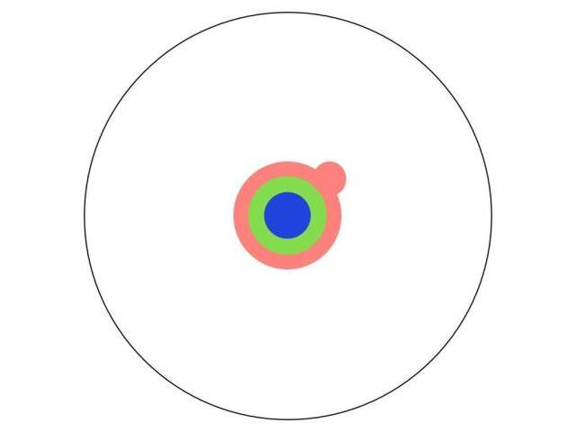</img> --- ## 研究所兩年 ## 再練兩年，氣宗九年。 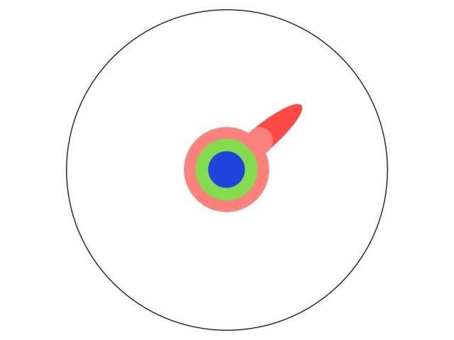</img> --- ## 研究所 ## 精益求精，修習更多更多的研究所課程 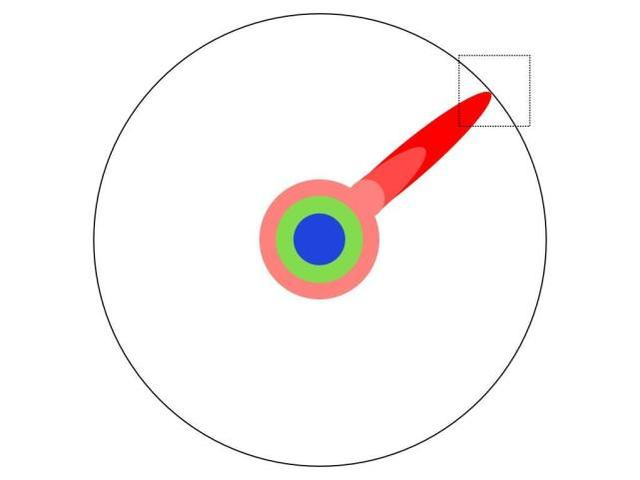</img> --- ## 還沒有去做的 ## 為全人類拓展知識的視野 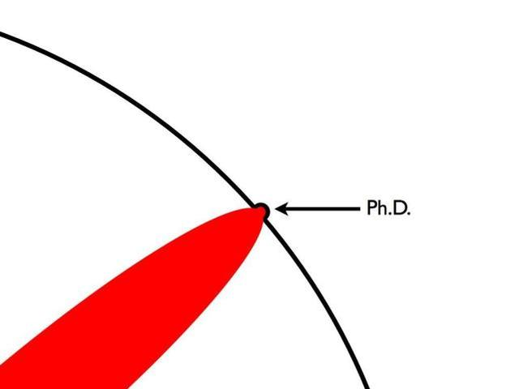</img> --- ## 研究所 ## 費曼學習法，寓教於樂、寓樂於教 * Sep. 2015 ~ Jan. 2016 臺灣大學 C程式語言設計 課程助教 * Mar. 2016 ~ Jun. 2016, Mar. 2017 ~ Jun. 2017 臺灣大學 平行程式設計 課程助教 --- ## 走向工作 ## 被引薦至 EDA 公司。 > 電子設計自動化（英語：Electronic design automation，縮寫：EDA）是指利用計算機輔助設計（CAD）軟體，來完成超大型積體電路（VLSI）晶片的功能設計、綜合、驗證。 一句話來說，「專業領域的修圖軟體」 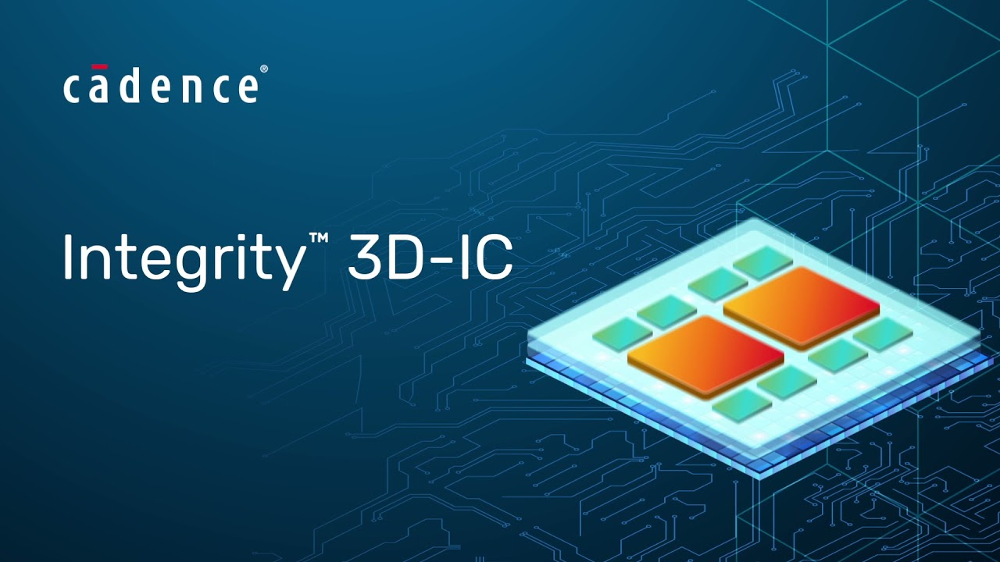</img> --- ## 工作內容 ## * 跨產品的整合介面問題 作業系統 * 產品硬體加速配置問題 計算機組織、計算機架構 </img> --- ## 工作內容 cont. ## 資料庫設計與擴充 * 資料庫系統、編譯器、即時系統 </img> --- ## 工作內容 cont. ## 自動化演算法開發 * 演算法、資料結構、計算幾何、計算機圖學、計算型智慧 </img> --- ## 工作內容 cont. ## 新世代產品 API 規劃 * 程式語言、物件導向、平行程式 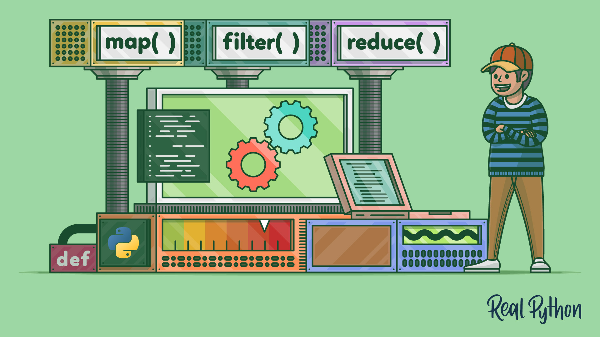</img> --- ## 工作內容 cont. ## * 產品使用體驗改善 使用者介面設計、認知學、基礎寫作能力 * 產品開發規範 軟體工程、物件導向、設計模式、敏捷開發 </img> --- class: center, middle 「只是看著是改變不了世界的， 你要通過選擇自己的生活方式，來改變它」 —《熱氣球飛行家》 --- class: center, middle ## Q & A ##